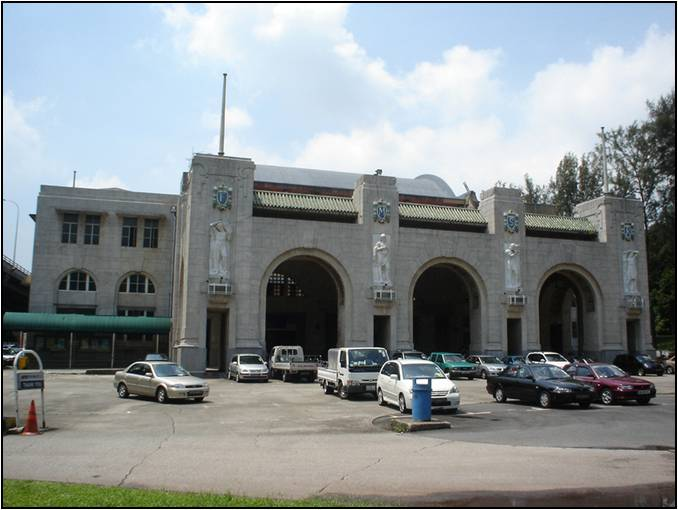
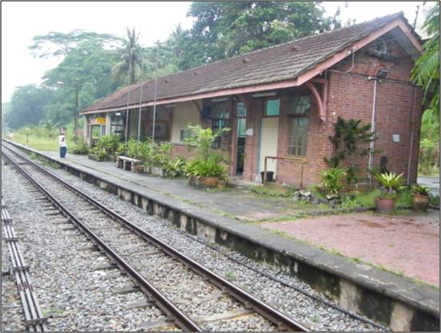
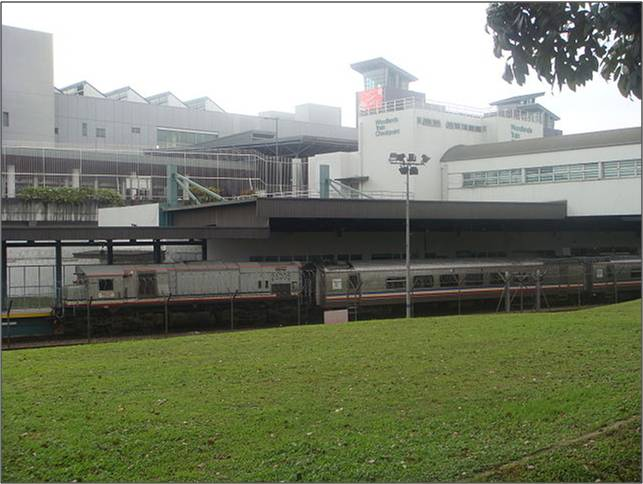
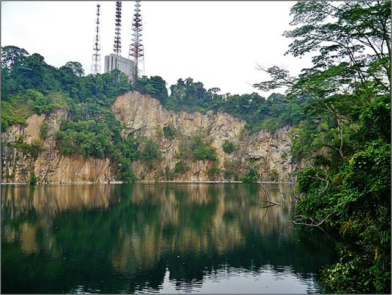
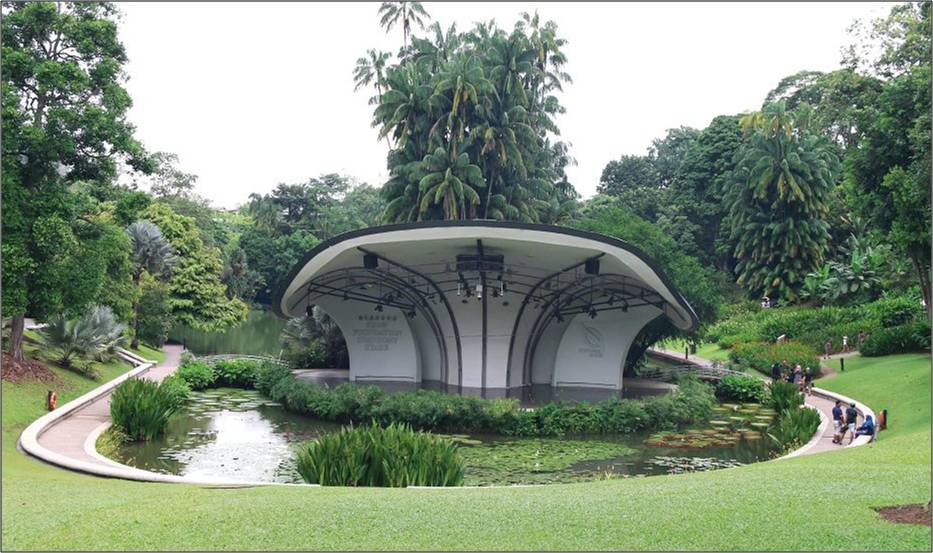
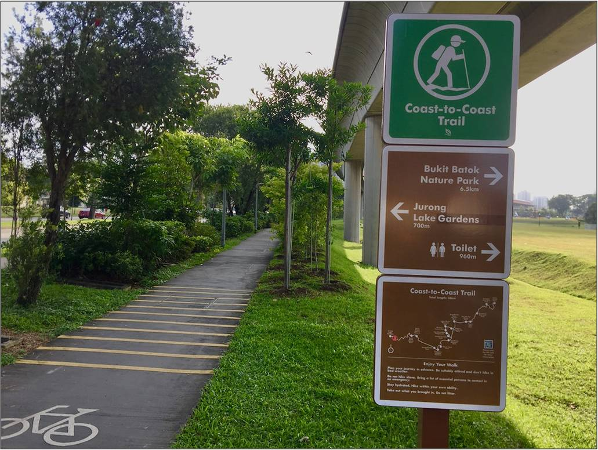

Its origins started from January 1903 where the first section of the Singapore Railway was built, stretching from Tank Road to Bukit Timah and consisted of four
stations on the line: Singapore, Newton, Cluny and Bukit Timah. Extension of the Singapore Railway came in a second phase in 1907, where there was an extension to
Pasir Panjang and Woodlands. After subsequent modifications to the railway track in 1966, an additional 19km-long branch was added to the Singapore Railway Line,
forming the most recent version of the Railway Line, starting from Tanjong Pagar and ending at Woodlands Train Checkpoint. In 2011, this Railway Line was
decommissioned and subsequently not in use, leading to the formation of the Rail Corridor upon removal of the train tracks along this route.
PROMINENT ATTRACTIONS ALONG RAIL CORRIDOR
Tanjong Pagar Railway Station

Tanjong Pagar Railway Station
Before the Tanjong Pagar Railway station was completed in 1932, passengers taking the trains boarded and alighted at Tank Road station. Tanjong Pagar Railway
Station was owned by Malaysia’s Keretapi Tanah Melayu (KTM) and is the southernmost terminal of the Malaysian Railway (West Coast Line), which connected the railway
stations all the way to the Woodlands Immigration Checkpoint which is the beginning point for another railway track connecting Singapore to Malaysia. It reflected a rich
Malaysian heritage with murals reflecting said culture. In April 2011, it has been conserved by the government as a national monument, preserving heritage from its heyday
and legacy.
Bukit Timah Railway Station

Bukit Timah Railway Station
The Bukit Timah Railway Station opened in 1915 connected one end of the line to Tank Road Terminal and the other end was connected to Malaysia via Kranji and Woodlands.
Similar to most of the other stations, it was decommisioned in 2011 and now the railway tracks are open to the public for nature walks, and is now the central part of Rail
Corridor, where certain nature parks exist near this region of the Rail Corridor.
Woodlands Train Checkpoint

Woodlands Train Checkpoint
Unlike other train stations which were decommisioned in 2011, it is now the sole train station that links to the Malaysian rail system directly and is now still
functioning in order to transport travellers from Singapore to Johor and vice versa, as well as a checkpoint to regulate the flow of people between the two lands.
PLACES AND TRAILS TO VISIT ALONG RAIL CORRIDOR
In addition to the landmark stations previously, there are other attractions and landmarks that one can visit, especially for nature enthusiasts who wish to explore the
flora and fauna in the region.
Bukit Timah Nature Reserve

Bukit Timah Nature Reserve
Bukit Timah Nature Reserve was one of the first forest reserves to be established in Singapore, in 1883. It is home to a majority of our nation’s native flora and fauna,
some of these species include the Shorea curtisii, Red Dhup (Parishia insignis), Greater Racket-tailed Drongo (Dicrurus paradiseus) and Malayan Colugo (Galeopterus variegatus). It is
also home to Singapore's highest hill, Bukit Timah Hill, which stands at 163m and is a great place for visitors who appreciate exploring nature.
Singapore Botanic Gardens

Singapore Botanic Gardens
Singapore Botanic Gardens with a 160-year heritage possesses an array of botanical and horticultural features with a rich history and a wonderful plant collection that is of
worldwide significance. It also contains the Symphony Lake which hosts several orchestral performances. Other venues present within Singapore Botanic Gardens include the Ethnobotany
Garden, where visitors can learn about plants used by indigenous cultures of Southeast Asia, and the Gallop Extension which enables visitors to learn about forest ecology and the
signficance of conservation. On 4 July 2015, Singapore Botanic Gardens received recognition as a UNESCO World Heritage Site, adding to the rich culture that Singaporeans can be proud
of, having the Gardens as a global icon.
Coast-To-Coast Trail

Coast-To-Coast Trail
The Coast-to-Coast Trail traverses Singapore from west to northeast in a 36km trail. It connects park connectors and park trails, and will bring visitors through a variety of
parks, such as the Bishan-Ang Mo Kio park, Jurong Lake Gardens and the Chestnut Nature Park. The trail also connects to other park connectors, nature areas, places of interest and urban spaces.
There is a cycling trail that accompanies this trail to allow for cyclists to explore various nature sites and places of interest.
Disclaimer: All images used do not belong to the creator of this webpage.